Documentación técnica del generador de datos de prueba para bases de
datos relacionales. Todo lo de esta página se genera desde el código
con python3 docs/generar_documentos.py; ningún archivo está escrito a mano.
python3 app.py) y necesita un alojamiento que la
ejecute; los sitios de archivos estáticos como este no pueden correr Python.
Qué hace, arquitectura módulo por módulo, puesta en marcha, portabilidad entre motores y límites conocidos.
Cada tabla y cada columna con su tipo en SQLite y en PostgreSQL, su nulabilidad, su clave y el generador que lo produce.
Script completo: las 8 tablas y un lote de 1 213 filas. Se ejecuta tal cual en un motor SQLite real.
Diagrama entidad-relación en Mermaid. Este archivo es la fuente estable; el SVG se regenera en cada publicación.

| Comprobación | Resultado |
|---|---|
| Lote generado (semilla 2026, volúmenes por defecto) | 1 213 filas |
| Filas aceptadas por el motor | 1 213 / 1 213 (100 %) |
Filas huérfanas (PRAGMA foreign_key_check) | 0 |
Columnas UNIQUE sin repeticiones | 8 / 8 |
| Celdas obligatorias vacías | 0 |
| Pruebas del núcleo | 30 / 30 |
| Pasos del recorrido en navegador | 23 / 23 |
| Línea base: generador genérico (solo conoce el tipo) | 343 / 1 600 (21,4 %) |
UNIQUE y los CHECK, las acepta todas.